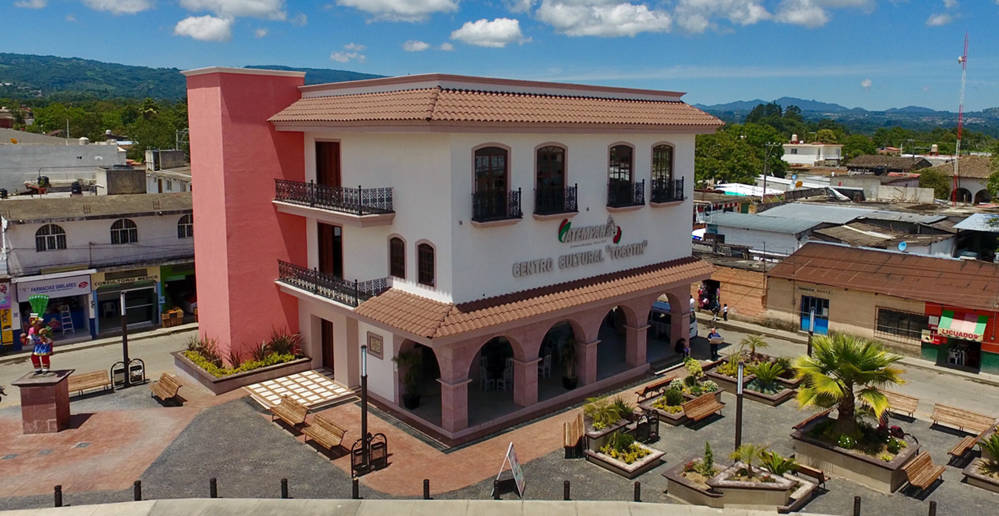

Biblioteca Pública Municipal Atempan, Puebla
 Conocida localmente como Biblioteca Pública Municipal “Lic. Manuel Bartlett Díaz”.
Fue fundada en 1987 por la Red Estatal de Bibliotecas, ocupando el número 2835. Formó parte del proyecto del presidente de México Miguel de la Madrid, durante el gobierno del presidente municipal el profesor José Francisco Tomás Flores Candelaria.
Inició con mas de 4000 libros, sin tener un espacio fijo. Siendo hasta el periodo presidencial del doctor Rubén Dario Quintero Vázquez (1996-1999), cuando se construyó un edificio para la biblioteca. Se reconstruyó a finales de 2016 y principios de 2017, inaugurada en febrero de este ultimo año.
La primer bibliotecaria de esta biblioteca pública municipal, fue la señora Rosa María López Balderrábano.